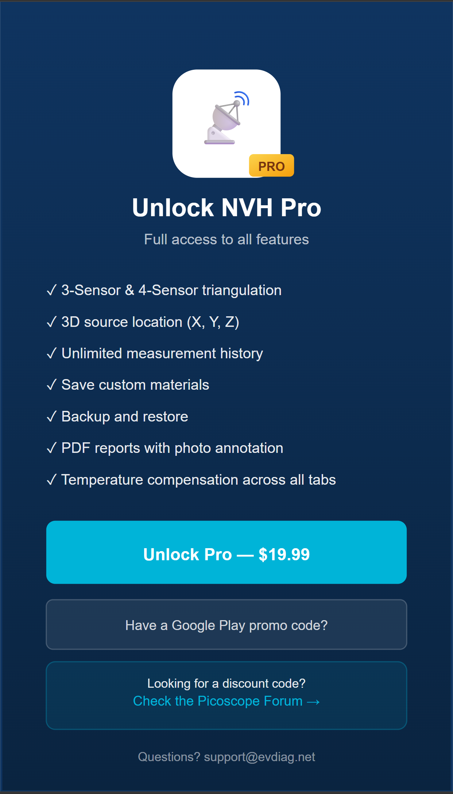

Um resumo de uma página. Para detalhes completos, veja Guia do Usuário.
d)tCal) — preenchido automaticamente pelo materialtEvent e Primeiro sensor (A ou B)
| Aba | Saída | Campos Pro? |
|---|---|---|
| 2-Sensor | Distância ao longo da linha | Não (totalmente gratuito) |
| 3-Sensor | X, Y em uma superfície | Sim |
| 3-Sen+ | X, Y com LSQ sobre 3 pares | Sim |
| 4-Sensor | X, Y a partir de dois pares (A–B + C–D) | Sim |
| 4-Sen+ | X, Y a partir de 4 sensores, posição livre | Sim |
| 3D | X, Y, Z a partir de 4 sensores | Sim |
| 3D+ | X, Y, Z a partir de até 6 sensores | Sim |
| Materials | Seletor de velocidade do som | Não |
| Help | Tutoriais | Não |
As configurações ficam no ícone ⚙ (canto superior direito), não em uma aba.
Configurações → Temperatura de referência, intervalo -40 a +200 °C.
tCal em todas as abasFreemium com bloqueio por recurso ($19,99): - Gratuito: aba 2-Sensor totalmente funcional, sem limites - Pro: Outras abas acessíveis, mas com campos com cadeado dourado que mostram a paywall ao toque
Pro desbloqueia: 3-Sensor até 3D+, materiais personalizados, backup/restauração, relatórios PDF, anotação de fotos.

Botão Imprimir resultado em qualquer tela de resultado → PDF com cabeçalho, entradas, resultado, visualização, foto (se tirada) e rodapé de temperatura (quando a compensação está ativa).
Personalize o cabeçalho em Configurações → Cabeçalho do relatório.
Backup: Configurações → Backup → compartilhar em nuvem/e-mail.
Restaurar: Configurações → Restaurar → selecionar arquivo de backup.
Mesma conta Google (Android) ou Apple ID (iOS) com que comprou → Configurações → Restaurar compra → desbloqueia em segundos.
A restauração automática ocorre silenciosamente quando você retorna ao aplicativo depois de resgatar um código promocional externamente.
tEvent / Primeiro sensor / espaçamento entre sensoresdata-step — reinicie o aplicativo se estiverem faltandoContato support@evdiag.net — inclua modelo do dispositivo, versão do aplicativo (Configurações → parte inferior) e descrição do que você tentou.